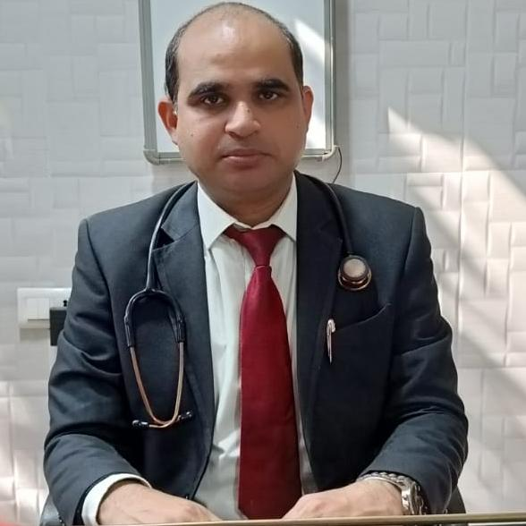

Advanced Heart Care with Compassion & Excellence

M.B.B.S, M.S, M.CH (CVTS), KEM, MUMBAI
Senior Consultant Cardiac Surgeon
(Heritage I.M.S) Varanasi
Speciality: Cardiac Surgeon
Dr. Harendra Ojha is a trusted Heart Surgeon with over 10+ years of experience in advanced cardiac procedures. Known for clinical excellence and compassionate care, Dr. Ojha is dedicated to providing safe, effective, and personalized heart treatment.
Driven by a commitment to innovation and compassionate care, Dr. Ojha combines advanced medical technology with a deeply patient-focused philosophy.
If you experience Chest pain, fatigue, shortness of breath, sweating or Anxiety, contact a cardiologist immediately.
Available: Each Sunday
Maharana Pratap Nagar, New Police Line,
Near Brahma Sthan Main Road,
Ara - 802301
Mobile: 6200627821